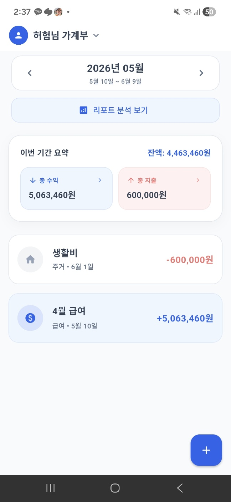
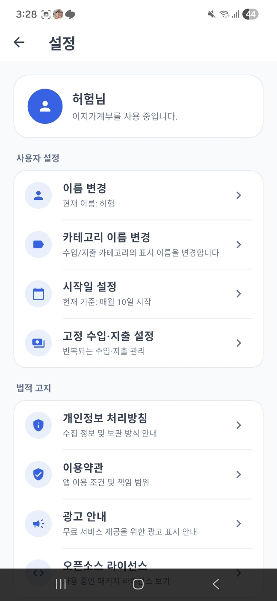
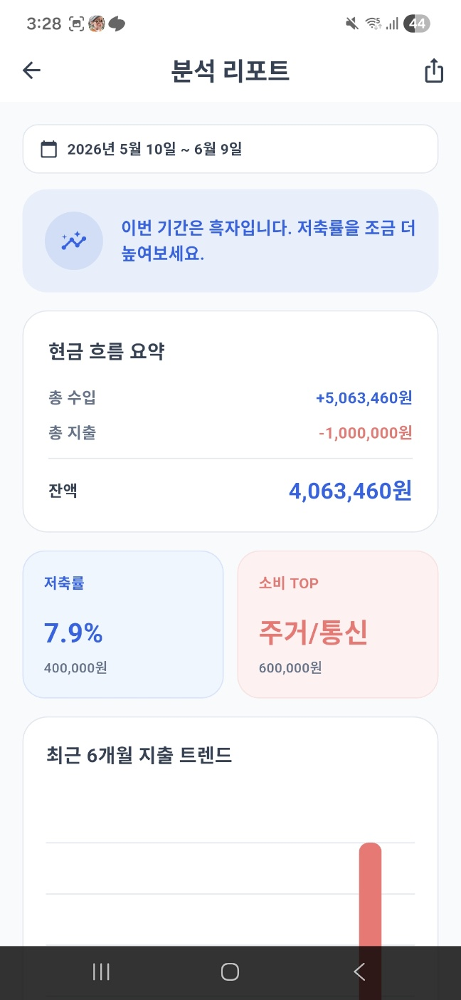
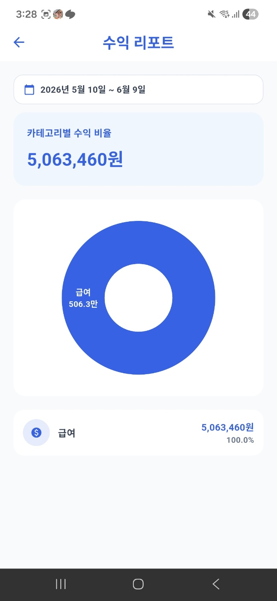
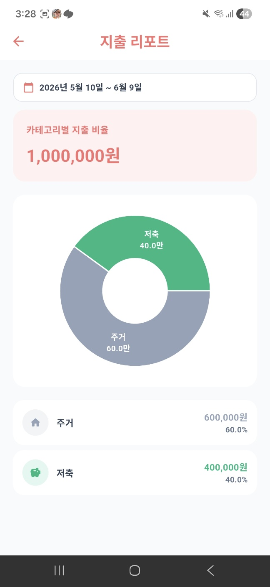

서비스 소개
가계부쓰니는 사용자가 직접 입력한 수입과 지출 데이터를 기반으로 월간 가계 흐름을 정리하고, 분석 리포트를 통해 소비 패턴을 이해할 수 있도록 돕는 모바일 가계부 앱입니다.
별도 회원가입 없이 사용할 수 있으며, 데이터는 기본적으로 사용자 기기 내부에 저장됩니다.
주요 기능
수입·지출 관리수입과 지출 내역을 날짜, 금액, 항목명, 카테고리 기준으로 기록합니다.
고정 수입·지출 설정월급, 생활비, 구독료처럼 반복되는 거래를 자동으로 반영합니다.
분석 리포트현금 흐름, 저축률, 소비 TOP, 최근 6개월 지출 트렌드를 제공합니다.
카테고리 설정수입/지출 카테고리 이름을 사용자가 원하는 방식으로 변경할 수 있습니다.
시작일 설정월급일 기준처럼 사용자별 소비 기간을 직접 설정할 수 있습니다.
데이터 백업·복원앱 데이터를 백업 파일로 저장하고 필요할 때 복원할 수 있습니다.
화면 미리보기

메인 화면
설정
분석 리포트
수입 리포트
지출 리포트데이터 처리 방식
가계부쓰니는 현재 별도의 외부 서버를 사용하지 않습니다. 사용자가 입력한 수입, 지출, 카테고리, 설정 데이터는 사용자 기기 내부에 저장됩니다.
앱 개발자는 사용자가 입력한 가계부 데이터에 접근하지 않습니다.
개인정보처리방침
가계부쓰니의 개인정보 처리 기준은 아래 페이지에서 확인할 수 있습니다.
문의
서비스 관련 문의는 아래 이메일로 연락해 주세요.